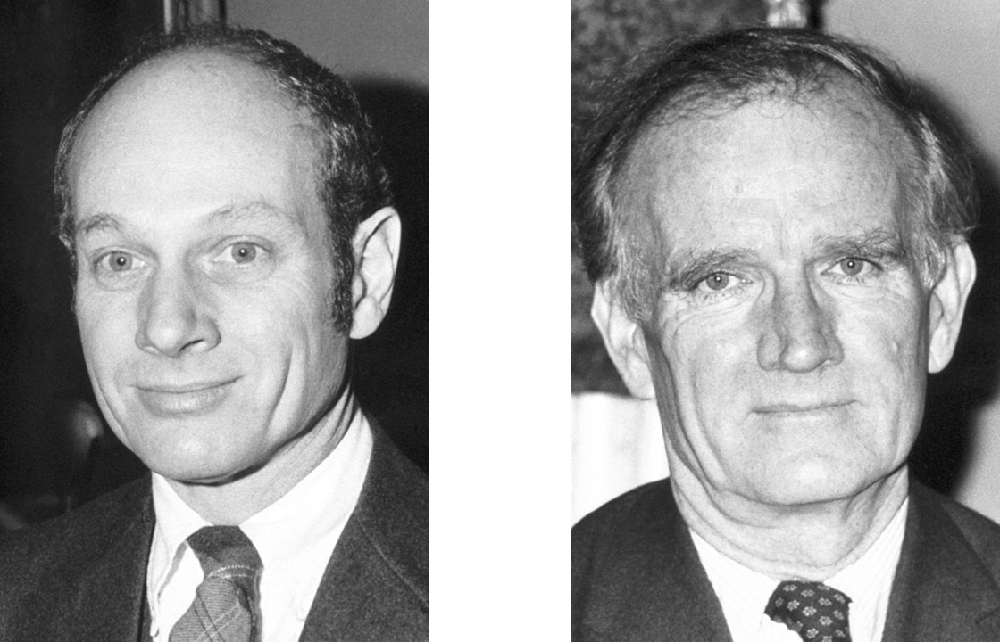

The question of antimatter is, is a question which physicists have been tackling for a long time. It is known that this exists, but what we don't understand is where is it, and if it exists, how do we?
In 1928, Paul Dirac (left) was solving an equation describing the behaviour of a moving electron, when he found that there were two solutions. His equation showed the existence of two electrons: the electron that he knew of, and the existence of another, with positive energy. From this, he guessed that this positive electron exists, with all other properties the same, but with the opposite charge. He first speculated the existence of antimatter.
In 1932, when Carl Anderson (middle), was studying showers of cosmic particles in a cloud chamber, he saw a track left by a positively charged particle with the mass of an electron. After almost a year of observation, he decided that it was an antielectron, which was produced when an electron was.
When high energy cosmic rays (mostly protons) react with atoms on Earth, under a magnetic field in a cloud chamber, particles may bend into circular paths. Measuring the curvature of tracks left behind can find the particle's momentum and its sign. Photographs (like the one show on the right) revealed that cosmic rays produce both positively and negatively charge particles, with the tracks radii being the same for both. Therefore, the positrons moved the same way as electrons, but in the opposite direction under the field.
When light hits the nucleus of an atom, an electron and a positron is produced. These are always produced in pairs: a particle pairs with an antiparticle, which have the same properties but did the opposite thing. Therefore, antimatter can be seen as being almost the same thing as normal matter, but with the opposite charge.
However, it is observed that when matter and antimatter meet, they destroy each other. Although the 'anti-versions' of everything can theoretically exist, it is annihilated when it meets any normal matter. When this annihilation happens, Gamma waves or X-rays are emitted
The problem is: why is there clearly so much more normal matter than antimatter? As has been observed, matter and antimatter are made in a 1:1 ratio, so should have annihilated as soon as created.
There are many theories, but we still do not know why. If antimatter existed in large separate areas, much annihilation would still occur and we would pick up extremely large amounts of gamma rays. However, the only antimatter that we observe in space is very occasional, and then immediately annihilated. However, it is known that for around every 1 billion interactions which should create a particle and antiparticle, one extra particle is created. However, this ratio is so small that it still does not explain the incredibly large amounts of matter.
The matter antimatter asymmetry problem is one of the most puzzling problems in physics. James Cronin (left) and Val Fitch (right) won the Nobel prize in physics in 1980 when they discovered slight differences between the two.
The neutral kaon is made of one matter and one antimatter particle. However, though they are together, they do not annihilate each other when they interact because they are not exact opposite counterparts, but different things. What they discovered, was that when the matter and antimatter particles were swapped in the kaon, the weak force treated the particles differently. However, this still doesn't explain the asymmetry problem.
The matter-antimatter asymmetry problem is still unsolved. However, although we know nothing about why there is so little antimatter, scientists actually know a lot about antimatter - in fact, it is even useful. Antimatter is used for PET (positron emission tomography) scans, when a patient is inject with radioactive sugars which emit positrons when they decay. The machine detects the positrons, allowing them to see a very detailed view inside the body.